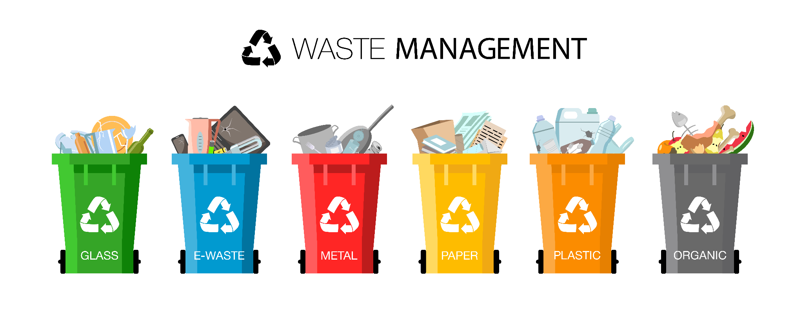

Waste (or wastes) are unwanted or unusable materials. Waste is any substance discarded after primary use, or is worthless, defective and of no use. Examples include municipal solid waste (household trash/refuse), hazardous waste, wastewater (such as sewage and surface runoff), radioactive waste, and others. Inappropriately managed waste can attract rodents and insects, which can harbour gastrointestinal parasites, yellow fever, worms, the plague and other conditions for humans, and exposure to hazardous wastes, particularly when they are burned, can cause various other diseases including cancers. Toxic waste materials can contaminate surface water, groundwater, soil, and air which causes more problems for humans, other species, and ecosystems. A form of waste disposal involving combustion creates a significant amount of greenhouse gases. When the burned waste contains metals, it can create toxic gases. On the other hand, when the waste contains plastics, the gases produce contain CO2. As global warming and CO2 emission increase, soil begins to become a larger carbon sink and will become increasingly volatile for our plant life.
What constitutes waste depends on the eye of the beholder; one person's waste can be a resource for another person. Though waste is a physical object, its generation is a physical and psychological process. People in developing countries suffer from contaminated water and landfills caused by unlawful government policies that allow first-world countries and companies to transport their trash to their homes and oftentimes near bodies of water. Those same governments do not use any waste trade profits to create ways to manage landfills or clean water sources. There are piles of waste used as makeshift bridges over lakes, with metals and chemicals just seeping into the water and groundwater that could be linked to homes' water systems. This unfortunate situation and dumps/landfills can be seen in countries that are considered the third world, such as other West African countries and China.
Waste management or waste disposal includes the processes and actions required to manage waste from its inception to its final disposal. This includes the collection, transport, treatment and disposal of waste, together with monitoring and regulation of the waste management process and waste-related laws, technologies, economic mechanisms. Waste can be solid, liquid, or gases and each type has different methods of disposal and management. Waste management deals with all types of waste, including industrial, biological, household, municipal, organic, biomedical, radioactive wastes. In some cases, waste can pose a threat to human health. Health issues are associated throughout the entire process of waste management. Health issues can also arise indirectly or directly: directly through the handling of solid waste, and indirectly through the consumption of water, soil and food. Waste is produced by human activity, for example, the extraction and processing of raw materials. Waste management is intended to reduce adverse effects of waste on human health, the environment, planetary resources and aesthetics.
Effective 'Waste Management' involves the practice of '7R' - 'R'efuse, 'R'educe', 'R'euse, 'R'epair, 'R'epurpose, 'R'ecycle and 'R'ecover. Amongst these '7R's, the first two ('Refuse' and 'Reduce') relates to the non-creation of waste - by refusing to buy non-essential products and by reducing consumption. The next two ('Reuse' and 'Repair') refers to increasing the usage of the existing product, with or without the substitution of certain parts of the product. 'Repurpose' and 'Recycle' involves maximum usage of the materials used in the product, and 'Recover' is the least preferred and least efficient waste management practice involving the recovery of embedded energy in the waste material.